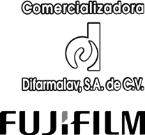
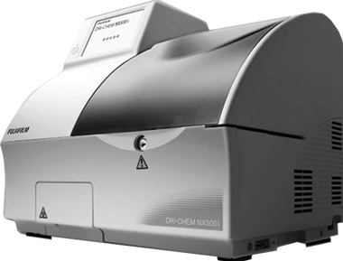

Dri-chem nx 500
Analizador automático para química clínica

DESCRIPCIÓN:
Equipo automatizado para química clínica DRI-CHEM NX 500 con metodología de química seca de última generación para la cuantificación de 31 parámetros bioquímicos.
Bioquímica general: Albúmina, nitrógeno ureico, calcio, creatinina, bilirrubina directa, bilirrubina total, glucosa, colesterol total, colesterol HDL, fósforo inorgánico, magnesio, amoniaco en suero y plasma, triglicéridos, proteínas totales, ácido úrico, CO2.
Enzimas: Colinesterasa, leucina aminopeptidada, fosfatasa alcalina, amilasa, CK-MB, CPK, GGT, AST, ALT, LDH, lipasa.
Electrólitos: Sodio, potasio y cloro.
Inmunología: Proteína C reactiva (PCR).
CARACTERÍSTICAS:
El equipo DRI-CHEM NX 500 es de fácil manejo, no requiere agua, no requiere de preparaciones adicionales, sólo requiere pequeñas cantidades de muestra y su procedimiento de trabajo no tiene complicaciones para el operador. Es un equipo compacto (24 kg) de mesa y con toma de corriente de 110 v.
El equipo DRI-CHEM NX 500 es un equipo ideal para apoyo en laboratorios de gran volumen y como equipo de base para laboratorios de mediano y bajo volumen, por su versatilidad es sin duda en excelente equipo para las áreas hospitalarias de emergencias, salas de urgencias y unidades móviles.
DATOS COMPLEMENTARIOS: Para mayor información llamar a:
COMERCIALIZADORA DIFARMALAV, S.A. DE C.V.
Teléfonos: 01 222 594-3465, 755-3753, 755-3752
Lada sin costo: 01 800 DIFARMA, 01 800 161-6707
(01 800 343 2762)
e-mail: difarmaventas@hotmail.com
www.difarmalav.com.mx